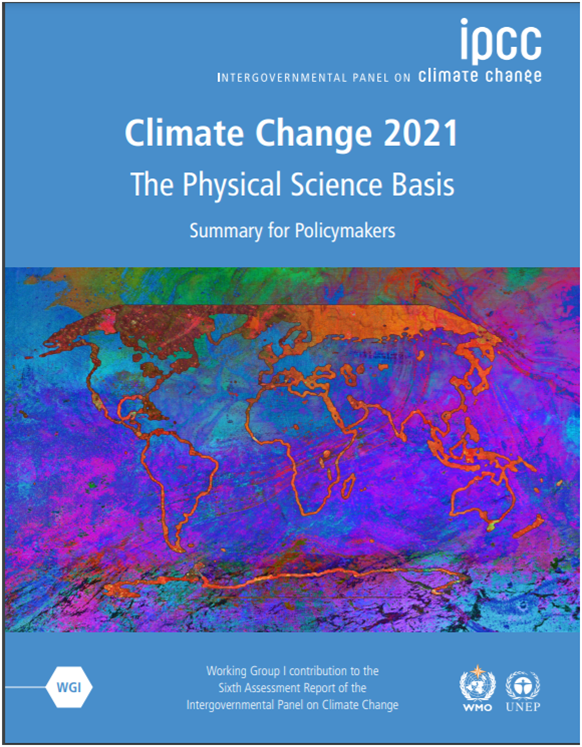
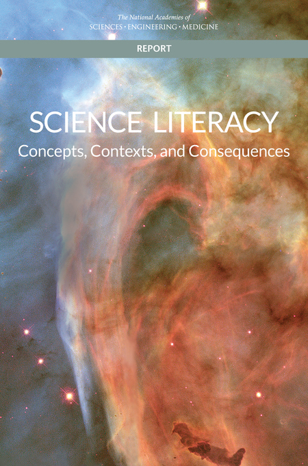
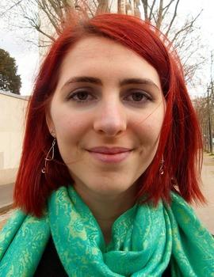
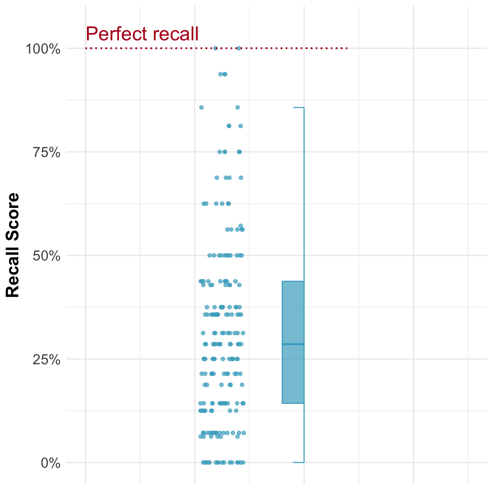
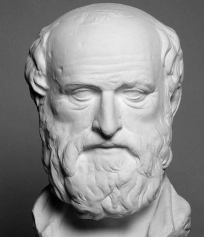
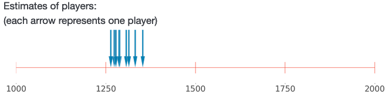
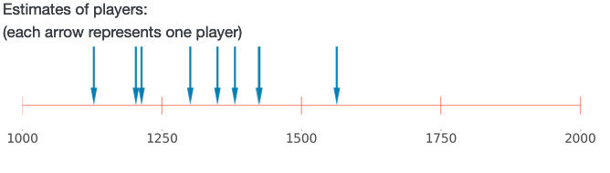

| Archaeology |
|---|
| 1. Archaeologists can determine whether someone was male or female from their bones. |
| 2. Archaeologists can determine how old someone was from their bones. |
| 3. Archaeologists can determine whether someone suffered from a range of diseases from their bones. |
| 4. Archaeologists can determine at what age someone stopped drinking their mother’s milk, based on the composition of their teeth. |
| 5. The nerve controlling breathing is larger in humans than in apes. The canal containing that nerve is also larger in humans and Neanderthals than in apes. |
| 6. The fact that the nerve controlling breathing is larger in humans is possibly due to the need for fine-grained control of breathing to speak. |
| 7. Archaeologists determined that most Neanderthals were right-handed, based on analysis of Neanderthals’ tools. |
| 8. Handedness is thought to be related to the evolution of language. This suggests that Neanderthals likely possessed a form of language. |
| For each knowledge element, participants could score a maximum of two points. |
A cognitive perspective on trust in science
(PhD thesis defense)
Jan Pfänder
2025-09-03
Trust in science matters…

Researchers are typically interested in why people do NOT trust science
A lack of trust in science is due to…
- a knowledge deficit (Sturgis and Allum 2004)
- certain psychological traits, such as Social Dominance Orientation, conspiratory thinking, hierarchical worldviews (Hornsey and Fielding 2017; Rutjens and Većkalov 2022)
- motivated reasoning, i.e. selecting and interpreting information to match one’s existing beliefs or behaviors (Lewandowsky and Oberauer 2016, 2021)
- misinformation (National Academies of Sciences 2024; Scheufele and Krause 2019; Druckman 2022)
- people feeling alienated from modern and increasingly complex institutions (Gauchat 2011)
But:
Across the globe, most people do tend to trust science.
Cologna et al. (2025)
Low (1)
High (5)
The puzzle of trust in science
According to existing accounts, if trust in science is rational, it should be caused mostly by knowledge and understanding of science.
But…
People don’t know much about science

For example…
In 2014, only 51 % of U.S. adults (correctly) stated that electrons are smaller than atoms.
(46% in the European Union in 2005)
(28% in Japan in 2011)
In 2020,
“60% of U.S. adults could correctly note that a control group can be useful in making sense of study results”

Science knowledge is only weakly correlated with attitudes towards science in general (Allum et al. 2008)
National average PISA scores are not correlated with national average trust in scientists (Cologna et al. 2025)
Is public trust in science irrational?
If not because of knowledge and understanding, why do people trust science?
The rational impression account of trust in science
A cognitive model of how people come to trust science
Two basic cognitive mechanisms
- People infer competence from possessing rare knowledge. But while the impression of competence persists, people forget the specific knowledge [Chapter 3]
For example, if a colleague at work fixes our computer, we might remember that she is competent, but not exactly how she fixed it.
- People infer accuracy from consensus [Chapter 4]
For example, if we have to pick between two restaurants we don’t know, but everyone we ask says that Restaurant A is better, we’ll believe it is indeed better
[Chapter 3]
Trusting but forgetting impressive science

Two Studies
696 participants from the UK
Study 1
Version A (less impressive)
[…]
“Sometimes entomologists study insects by observing them in the wild, sometimes they conduct controlled experiments in laboratories, to see for example how different environmental factors change the behavior of insects, or to track exactly the same insects over a longer period of time.”
[…]
Version B (more impressive)
[…]
“Entomologists interested in how flies’ visual perception works have used special displays to present images for much less than the blink of an eye, electrodes to record how individual cells in the flies’ brain react, and ultra-precise electron microscopy to examine their eyes.”
[…]
Participants perceived some science related information as more impressive than other.
This had an impact on their trust in the scientific discipline and their perceptions of the scientists’ competence…
Study 2
Participants read the impressive version of the texts from Study 1.
Again, participants reported increased perceptions of trust and competence.
Then, right after, we asked participants to recall what they had read (open-ended question)
Result: not much

Conclusion
When people read impressive scientific information, their trust in the scientific discipline increases
They then immediately forget most of the content.
Two basic cognitive mechanisms
- People infer competence from possessing rare knowledge. But while the impression of competence persists, people forget the specific knowledge [Chapter 3]
- People infer accuracy from consensus [Chapter 4]
[Chapter 4]
How wise is the crowd:
Can we infer people are accurate and competent merely because they agree with each other?

Imagine that you live in ancient Egypt, and a fellow called Eratostenes claims the circumference of the earth is 252’000 stades (approximately 40’000 kilometers).

You know nothing about this man, the circumference of the Earth, or how one could measure such a thing.
As a result, might (mis)take Eratostenes for a pretentious loon.
But what if other scholars had arrived at very similar measurements, independently of Eratosthenes?
Or even if they had carefully checked his measurement, with a critical eye?
This inference–from agreement to both accuracy and competence–is, in fact, rational.
The literature on wisdom of crowds has established that it is justified to infer accuracy from consensus…assuming a certain competence of the individuals.
In simulations, we show that this competence assumption is not needed.
In fact, it is justified to infer both accuracy and competence from convergence, in many scenarios.
6 Experiments
1197 participants from the UK
We showed participants the results of several fictional scenarios, where individuals had made estimates (e.g. players in a game).
Participants did not have any information on what the game was about or who the players were.
Convergent

Divergent

Participant behaved as what was predicted to be rational by our simulations:
They rated more convergent groups as more likely to be accurate and to be competent.
Predictions of the rational impression account
[Chapter 5] People should trust science more if they perceive it as more consensual and precise.
[Chapter 6] People who have been exposed to science (mostly during school) should trust most of science.
[Chapter 5]
The French trust more the sciences they perceive as precise and consensual
A survey
1012 participants (representative sample) from France
We asked participants how consensual and precise they view
- science in general
- different scientific disciplines in particular.
We also asked them about their trust.

Predictions of the rational impression account:
[Chapter 5] People should trust science more if they perceive it as more consensual and precise.
[Chapter 6] People who have been exposed to science (mostly during school) should trust most of science.
[Chapter 6]
Quasi-universal acceptance of basic science in the US
4 Studies (two on vaccine-skeptics)
782 participants from the United States
Even if most people tend to trust science…
Substantial minorities…
- say that they don’t trust science in general (Wellcome Global Monitor 2018),
- or believe in conspiracy theories which reject the scientific consensus.
(e.g., in 2023, 24% of Americans agreed that “climate change is a hoax and scientists touting its existence are lying”)(Stockemer and Bordeleau 2024)
To which extent do these people reject science?
According to the rational impression account, people who have been exposed to science (essentially everyone who grew up in the US, via education) should have a solid baseline of trust in science.
We asked participants basic science questions
E.g., “Are electrons smaller, larger, or the same size as atoms?”
We then showed them the scientifically consensual answer, and in some studies also a short explanation, and links to sources.
Then we asked: “Do you accept this answer?”
Conclusion
In the US, essentially everyone accepts basic science knowledge.
Participants who were convinced that climate change due to fossil emissions is a hoax (11 % of participants) had an acceptance rate of 92 %.
Even participants who strongly believed that the earth is flat (4 % of participants) had an acceptance rate of 87 %
[Chapter 7]
Spotting False News and Doubting True News, A Meta-Analysis of News Judgments
Newman et al. (2018)
There has been a lot of research on people’s belief in misinformation

Pennycook et al. (2021)

Pennycook et al. (2021)
A meta-analysis
67 papers
194’438 participants
303 effect sizes
40 countries
Discernment = Accuracy(true news) − Accuracy(false news)
For 298 of the 303 effect sizes, people rated true news as (a lot) more accurate than false news
On the whole, people did well in discerning true from false news…
but of course they still made some errors.
Skepticism bias = Error(true news) - Error(false news)
For 203 of 303 effect sizes, people made (slightly) more errors on true news than on false news.
Interim conclusion
People discern rather well between true and false news.
If they err, they tend to be more skeptical of true news than gullible towards false news.
But…
The vast majority of the studies relied on a hand full of fact-checked items (Snopes, PolitiFact etc.) selected by the researchers.
Only in 3 papers, the researchers automatically scraped news…
There might be a selection bias in news items that lets people appear more skeptical in misinformation studies than they are in the real world.
But this does not change the broad conclusions…
Even assuming that people are slightly more gullible than skeptical…
- people consume very little information in general
- among this information, the share of misinformation very small
For example…
- In the U.S., misinformation represents 1% of the news consumption and 0.15% of Americans’ daily media diet (Allen et al. 2020).
- In France, misinformation represents 5% of the news consumption and 0.16% of people’s connected time (Cordonier and Brest 2021).
Conclusion
Misinformation (especially coming from elites) is a problem.
But people not believing true information might be the more pressing problem.
Researchers should diversify their samples of news items
General discussion
Most people trust science at least to some extent.
Yet, they don’t understand or know much about science.
The rational impression account:
When exposed to science (mostly during education) people rationally develop a positive impression of science–in particular of the competence of scientists–by
- inferring competence from possessing rare knowledge
- inferring accuracy from consensus
However, they forget most of the information that gave rise to this impression.
This aligns with normative accounts, which suggest that science is trustworthy because of convergent results from multiple sources and methods (Cartwright et al. 2022; Oreskes 2019)
Limitations
The rational impression account explains trust–not distrust
Even people who trust most scientific knowledge can still distrust science on specific instances for many reasons
For example, because some knowledge is perceived as particularly inconvenient
(e.g., knowledge of climate change which would urge us to change our behavior)
Or because it is rejected by other authorities–political, religious–people trust
(e.g., the rejection of evolution among many religious communities)
Just because there is a rational explanation for trust, distrust does not need to be irrational.
Some groups have been systematically neglected or ill-treated by science, e.g. African Americans. (Brandt 1978; Scharff et al. 2010)
Some people–even if they believe scientists are competent–can have reason to suspect that scientists don’t have their best interest at heart.
(e.g., people who feel a general alienation from institutions, for instance due to rising inequality) (Gauchat 2011)
The rational impression account is only a micro-level explanation.
It should be seen as complementary with macro-level (historical, sociological or political) explanations of trust in science.
(e.g., the political forces that led to the development of universal science education in many countries) (Childs 2015)
Implications
Science communication fosters trust in science.
Education has a positive impact even if it does not result in long-term memory of scientific facts or in an in-depth understanding of science.
But…
Science communication should not stress consensus and impressiveness at all costs
- Transparency about uncertainty is crucial for a lasting trust relationship between science and the public (Druckman 2015; Petersen et al. 2021)
- Intellectual humility has been shown to increase trust in scientists (Koetke et al. 2024)
Ultimately, doing better science will foster trust in science
- People value open-science practices (Song, Markowitz, and Taylor 2022)
- These practices will lead to more robust and consensual scientific findings
(e.g., mandatory pre-registration for clinical trials) (Kaplan and Irvin 2015)
Thank you!
References
Allen, Jennifer, Baird Howland, Markus Mobius, David Rothschild, and Duncan J. Watts. 2020. “Evaluating the Fake News Problem at the Scale of the Information Ecosystem.” Science Advances 6 (14): eaay3539. https://doi.org/10.1126/sciadv.aay3539.
Allum, Nick, Patrick Sturgis, Dimitra Tabourazi, and Ian Brunton-Smith. 2008. “Science Knowledge and Attitudes Across Cultures: A Meta-Analysis.” Public Understanding of Science 17 (1): 35–54. https://doi.org/10.1177/0963662506070159.
Brandt, Allan M. 1978. “Racism and Research: The Case of the Tuskegee Syphilis Study.” The Hastings Center Report 8 (6): 21. https://doi.org/10.2307/3561468.
Cartwright, Nancy, Jeremy Hardie, Eleonora Montuschi, Matthew Soleiman, and Ann C. Thresher. 2022. The Tangle of Science: Reliability Beyond Method, Rigour, and Objectivity. New York: Oxford University Press.
Childs, Peter E. 2015. “Curriculum Development in Science - Past, Present and Future.” Lumat: International Journal of Math, Science and Technology Education 3 (3): 381–400. https://doi.org/10.31129/lumat.v3i3.1036.
Cologna, Viktoria, Niels G. Mede, Sebastian Berger, John Besley, Cameron Brick, Marina Joubert, Edward W. Maibach, et al. 2025. “Trust in Scientists and Their Role in Society Across 68 Countries.” Nature Human Behaviour, January, 1–18. https://doi.org/10.1038/s41562-024-02090-5.
Cordonier, Laurent, and Aurélien Brest. 2021. “How Do the French Inform Themselves on the Internet? Analysis of Online Information and Disinformation Behaviors,” 45.
Druckman, James N. 2015. “Communicating Policy-Relevant Science.” PS: Political Science & Politics 48 (S1): 58–69. https://doi.org/10.1017/S1049096515000438.
———. 2022. “Threats to Science: Politicization, Misinformation, and Inequalities.” The ANNALS of the American Academy of Political and Social Science 700 (1): 8–24. https://doi.org/10.1177/00027162221095431.
Gauchat, Gordon. 2011. “The Cultural Authority of Science: Public Trust and Acceptance of Organized Science.” Public Understanding of Science 20 (6): 751–70. https://doi.org/10.1177/0963662510365246.
Hornsey, Matthew J., and Kelly S. Fielding. 2017. “Attitude Roots and Jiu Jitsu Persuasion: Understanding and Overcoming the Motivated Rejection of Science.” American Psychologist 72 (5): 459–73. https://doi.org/10.1037/a0040437.
Kaplan, Robert M., and Veronica L. Irvin. 2015. “Likelihood of Null Effects of Large NHLBI Clinical Trials Has Increased over Time.” PLOS ONE 10 (8): e0132382. https://doi.org/10.1371/journal.pone.0132382.
Koetke, Jonah, Karina Schumann, Shauna M. Bowes, and Nina Vaupotič. 2024. “The Effect of Seeing Scientists as Intellectually Humble on Trust in Scientists and Their Research.” Nature Human Behaviour, November, 1–14. https://doi.org/10.1038/s41562-024-02060-x.
Lewandowsky, Stephan, and Klaus Oberauer. 2016. “Motivated Rejection of Science.” Current Directions in Psychological Science 25 (4): 217–22. https://doi.org/10.1177/0963721416654436.
———. 2021. “Worldview-Motivated Rejection of Science and the Norms of Science.” Cognition 215 (October): 104820. https://doi.org/10.1016/j.cognition.2021.104820.
National Academies of Sciences, Engineering. 2024. Understanding and Addressing Misinformation about Science.
National Academies of Sciences, Engineering, and Medicine. 2016. Science Literacy: Concepts, Contexts, and Consequences. Edited by Catherine E. Snow and Kenne A. Dibner. Washington, D.C.: National Academies Press. https://doi.org/10.17226/23595.
National Science Board, National Science Foundation. 2024. “Science and Technology: Public Perceptions, Awareness, and Information Sources.” https://ncses.nsf.gov/pubs/nsb20244.
Newman, Nic, Richard Fletcher, Antonis Kalogeropoulos, and Rasmus Kleis Nielsen. 2018. “Reuters Institute Digital News Report 2018.”
Oreskes, Naomi. 2019. Why trust science? The University Center for Human Values series. Princeton Oxford: Princeton University Press.
Pennycook, Gordon, Jabin Binnendyk, Christie Newton, and David G. Rand. 2021. “A Practical Guide to Doing Behavioral Research on Fake News and Misinformation.” Collabra: Psychology 7 (1): 25293. https://doi.org/10.1525/collabra.25293.
Petersen, Michael Bang, Alexander Bor, Frederik Jørgensen, and Marie Fly Lindholt. 2021. “Transparent Communication about Negative Features of COVID-19 Vaccines Decreases Acceptance but Increases Trust.” Proceedings of the National Academy of Sciences 118 (29): e2024597118. https://doi.org/10.1073/pnas.2024597118.
Pfänder, Jan, and Sacha Altay. 2025. “Spotting False News and Doubting True News: A Systematic Review and Meta-Analysis of News Judgements.” Nature Human Behaviour, February, 1–12. https://doi.org/10.1038/s41562-024-02086-1.
Pfänder, Jan, Benoît De Courson, and Hugo Mercier. 2025. “How Wise Is the Crowd: Can We Infer People Are Accurate and Competent Merely Because They Agree with Each Other?” Cognition 255 (February): 106005. https://doi.org/10.1016/j.cognition.2024.106005.
Pfänder, Jan, Sophie De Rouilhan, and Hugo Mercier. 2025. “Trusting but Forgetting Impressive Science,” March. https://doi.org/10.31219/osf.io/argq5_v1.
Pfänder, Jan, Lou Kerzreho, and Hugo Mercier. 2025. “Quasi-Universal Acceptance of Basic Science in the US,” March. https://doi.org/10.31219/osf.io/qc43v_v2.
Pfänder, Jan, and Hugo Mercier. 2025. “The French Trust More the Sciences They Perceive as Precise and Consensual,” April. https://doi.org/10.31219/osf.io/k9m6e_v1.
Rutjens, Bastiaan T., and Bojana Većkalov. 2022. “Conspiracy Beliefs and Science Rejection.” Current Opinion in Psychology 46 (August): 101392. https://doi.org/10.1016/j.copsyc.2022.101392.
Scharff, Darcell P., Katherine J. Mathews, Pamela Jackson, Jonathan Hoffsuemmer, Emeobong Martin, and Dorothy Edwards. 2010. “More Than Tuskegee: Understanding Mistrust about Research Participation.” Journal of Health Care for the Poor and Underserved 21 (3): 879–97. https://doi.org/10.1353/hpu.0.0323.
Scheufele, Dietram A., and Nicole M. Krause. 2019. “Science Audiences, Misinformation, and Fake News.” Proceedings of the National Academy of Sciences 116 (16): 7662–69. https://doi.org/10.1073/pnas.1805871115.
Song, Hyunjin, David M Markowitz, and Samuel Hardman Taylor. 2022. “Trusting on the Shoulders of Open Giants? Open Science Increases Trust in Science for the Public and Academics.” Journal of Communication 72 (4): 497–510. https://doi.org/10.1093/joc/jqac017.
Stockemer, Daniel, and Jean-Nicolas Bordeleau. 2024. “Understanding Climate Change Conspiracy Beliefs: A Comparative Outlook.” Harvard Kennedy School Misinformation Review 5 (6). https://doi.org/10.37016/mr-2020-162.
Sturgis, Patrick, and Nick Allum. 2004. “Science in Society: Re-Evaluating the Deficit Model of Public Attitudes.” Public Understanding of Science 13 (1): 55–74. https://doi.org/10.1177/0963662504042690.
Wellcome Global Monitor. 2018. “Wellcome Global Monitor 2018.” https://wellcome.org/reports/wellcome-global-monitor/2018.